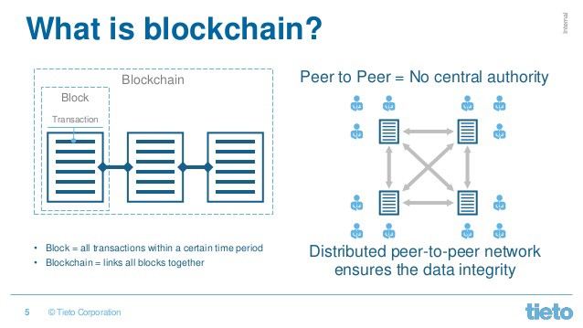

Why Blockchain ?
Description, Dec 19, 2018
Source: moneycontrol.com
You must have seen or even handled a ledger, that is used as a record for the business transactions or rather any financial activity. It might seem trustworthy but here are the drawbacks ; Anyone can tamper with it, there is no criteria to distinguish between an authentic one and a fake one.
Likewise, whenever there is business between two parties(say on the internet), there is a central authority(say a bank) involved. Now, you trust the bank website which holds all your credentials like your name, address, bank account number, PIN number and what not !. What is the guarantee that all your info is well guarded from any unwanted parties ike the hackers ? There is always the security risk involved. Also the engagement of the cenralized authority cannot be ruled out. Thats where Blockchain comes to the rescue.
What is Blockchain ?
Description, Dec 15, 2018
According to Wikipedia, A blockchain, is a growing list of records, called blocks, which are linked using cryptography. Each block contains a cryptographic hash of the previous block, a timestamp, and transaction data (generally represented as a merkle tree root hash).
By design, a blockchain is resistant to modification of the data. It is "an open, distributed ledger that can record transactions between two parties efficiently and in a verifiable and permanent way".